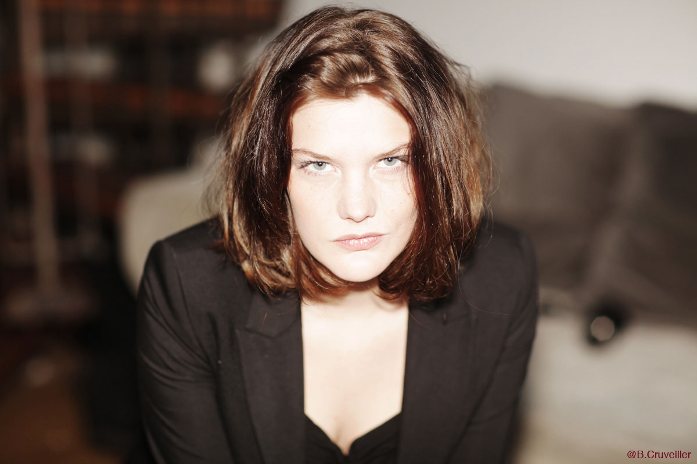

Actuellement membre de Trixter j'y apprends les méthodes du Drama Center (Londres) avec des professeurs tels que Gilles Foreman, Christopher Fettes ou Lena Lessing (Coach sur The Reader, Inglourious Basterds, X-Men Commencement etc).
Reçue directement en deuxième année des cours Florent et diplômée avec mention très bien, j'y ai été assistante de Laurent Natrella, sociétaire de la comédie française, de 2010 à 2011
Moyen Métrage réalisé par Jean-Baptiste Clarenc
Série de France 2 avec Claude Brasseur et Arielle Dombasle, sortie prévue septembre 2013
Court métrage réalisé pour l'ESEC.
Court métrage réalisé par Sarah Hafner, projeté au festival de Clermont dans les 10 sélectionnés par Nikon
Court métrage réalisé par Sarah Hafner.
Trailer réalisé par Arthur Graham-Maw, Produit par Psychedelic Offspring Productions Ltd.
Court métrage réalisé par Pierre H, produit par Acid Film
Réalisé par David Barka pour le CLCF
Teaser réalisé par Sarah Hafner et produit par le Collectif Triangle
Court métrage réalisé par Leslie Viellermau
(visa d'exploitation CNC 132417) présenté au short films corner Festival de Cannes 2012, projeté dans plus de 16 festival en France et à l'étranger, deuxième prix "tournez jeunesse"
Moyen métrage réalisé par Barbara de Lacerda
Court métrage réalisé par Emmanuel Vieilly, Trixter Production, Paris
Assistante réalisateur, épisode pilote pour série TV réalisé par Allan Couyaté.
Moyen métrage réalisé par Fabien Fallon à Rennes, actuellement dans plusieurs festivals.
Dans le rôle de Salomé. Docu-fiction réalisé par Thomas Coispel pour Baglis TV
court métrage réalisé par Joe Zerbib, Paris
Rôle principal. Court métrage réalisé par Teddy Jacquier dans le cadre de 3iS
Court métrage réalisé par Jean Christophe Lelu, Paris
Dans le rôle de Titania, Cours Florent, mise en scène de Laurent Natrella
Mise en scène collective au Théâtre du Rempart à Avignon
Dans le rôle d’Hedda Gabler, mise en scène de Sonia Ledoux, cours Florent
Dans le rôle de la prostituée, la femme mariée et l’actrice, cours Florent
Dans le rôle d’Agnès, (d’après l’Ecole des femmes de Molière) cours Florent
Dans le rôle de la Tisbe, mise en scène de Laurent Natrella
Lecture publique d’un extrait de Jeanne d’arc aux Estivales de Serres avec Jean-Claude Drouot
Cours Florent - 2010
Université Paris 1 - Panthéon Sorbonne - 2009
Université Paris 1 - Panthéon Sorbonne - 2009
Mention bien - Lycée Ampère, Lyon - 2006
courant
parlé
notions
Galop 6